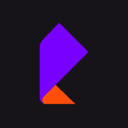
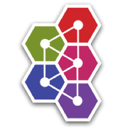
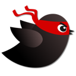
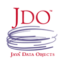
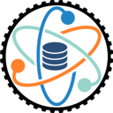
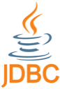
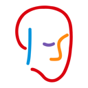

Волгоградский государственный технический университет
Автоматизированные системы обработки информации и управления
Lead Backend Developer
Руковожу backend-разработкой и проектирую сервисы на Java / Kotlin и Spring. Фокус — надёжная архитектура, delivery и развитие команды.
compiling excuses…
Experience

РТК ИТПоддержка и разработка сервисов экосистемы Лукоморье.
Поддержка и разработка бизнес-портала для клиентов МСБ.
Backend-разработка на Spring-стеке: REST, messaging, интеграции.
Tech stack
Инструменты ежедневной работы в роли Lead Backend.
Education
Автоматизированные системы обработки информации и управления
GitHub


Contact
Открыт к обсуждению интересных backend-задач и сотрудничества.
Toolkit

ActiveMQ
MyBatis
JDO
DataNucleus
JDBC
DroolsW/S или ↑/↓ — ракетка · Space — пауза · Esc — выход